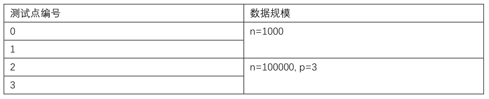
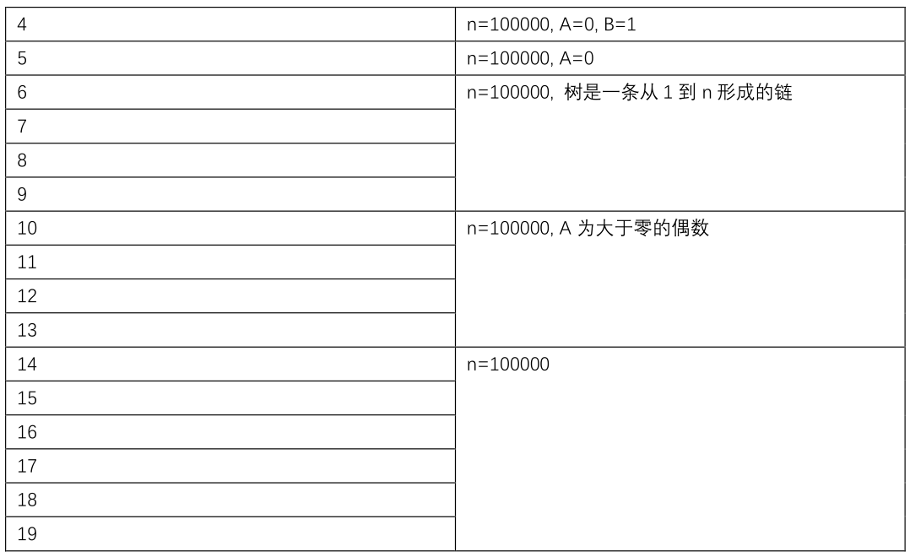
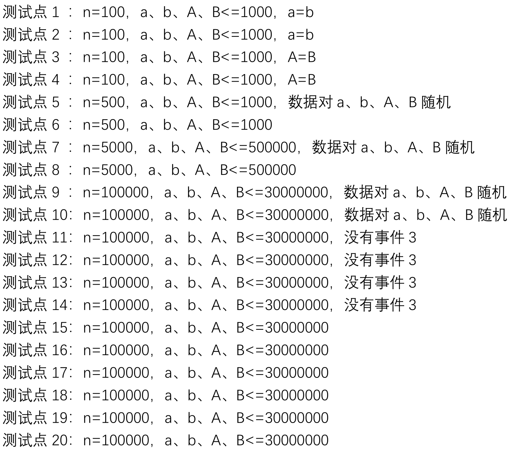

前言
好早以前就有过写一下SCOI2018题解的想法了，毕竟是自己参加过的第一次省选。可惜当时我非常菜，啥都不会，然后就咕咕咕了
最近四川省重新组织了一场SCOI2018的重现赛，现在我来补一下题解
题目描述会尽可能还原原题的描述
D1T1 树
题目描述
在一棵大小为$n$的树上，点从$1$到$n$标号，第$i$个点的点权为$A_i$，要求支持两种操作
- $1\ u\,$询问从$u$出发的简单路径，经过的点权之和的最大值
- $2\ u\ v\,$将$u$的权值修改为$v$
输入格式
第一行两个整数$n,m$，表示树的大小和操作数
第二行$n - 1$个整数，第$i$个整数$p_i$表示$p_i$和$i + 1$有边相连
第三行$n$个整数，分别代表每个点的点权
接下来$m$行，每行描述一个操作，格式见题目描述
输出格式
对于每个询问操作，输出经过的点权之和的最大值
数据范围
对于$10\%$的数据，满足$n\leq 1000, m\leq 1000$
对于另$20\%$的数据，不存在修改操作
对于另$20\%$的数据，满足$p_i = i$
对于$100\%$的数据，满足$n, m\leq 10^5, -10^4\leq A_i, v\leq 10^4$
题解
在复现赛中，这道题的内存限制从64MB变成了512MB
熟悉LCT维护虚子树的话可以看出，这道题实际上就是该算法的模板题
具体来说，考虑LCT剖出的每一条重链，该重链对应一棵splay。对于这棵splay上的每个节点，它在splay上的子树都对应原树中的一条子链。我们维护从这条子链的最浅点（即子树中最靠左的点）出发，在当前重链上只能经过splay上其子树内的点，并且可以从某个点走进虚儿子的最长路径长度。此外，我们还需要维护这条子链上的所有点（即splay子树中的点）的点权之和
对于每个点我们开一个multiset，维护从它的每个虚儿子走过来的最长路径。注意在access的时候需要修改
对于每个询问，直接将$u$makeroot，然后查询它对应的最长路径即可
如果在makeroot的时候翻转了splay，那么我们还需要额外维护从每条子链的最深点出发的最长路径
代码
1 |
|
D1T2 Numazu 的蜜柑
题目描述
蜜柑是 Numazu 的特产！这天 Chika 来到一棵蜜柑树下，发现这棵树由 $n$ 个结点组成（$1$号结点为根节点），每个结点都生长了一些蜜柑，结点 $u$ 的蜜柑数量记为 $a_u$ 。她想问聪明的你这样一个问题，有多少顶点对$(u,v)$满足：
- $v$是$u$的祖先
- $a_u^2 + Aa_ua_v+Ba_v^2\equiv 0\pmod p$
输入格式
第一行$4$个整数$n, p, A, B$
第二行包含$n$个整数$a_1, \cdots, a_n$
第三行包含$n - 1$个整数$fa_2, \cdots, fa_n$，分别代表每个点的父亲
输出格式
仅包含一行一个整数，为满足条件的顶点的数量
数据范围


题解
考虑枚举祖先$a_v$，将$a_v$看作常数，那么根据求根公式
求出$A^2 - 4B$在模$p$下的二次剩余，如果二次剩余不存在，那么当且仅当$a_u = a_v = 0$时方程成立
问题转化为统计每个点的子树内有多少个权值为$x$的点，启发式合并即可
代码
1 |
|
D1T3 星际迷航
题目描述
“如果宇宙中真有什么终极的逻辑，那就是终有一天我们会在舰桥上重逢，直到生命的终结，对于我们来说旅途的本身就是归宿。”，小 $7$ 一边说着一边凭借曲率引擎在宇宙中航行着，他十分在意自己能否到达他所想的时空坐标。确切的说在现代科学的描述中，空间、时间以及某些未知的要素构成的时空坐标可以描述为一个 $m$ 维空间，初始可以假设小 $7$ 所在的位置就是空间的原点。在 $m$ 维时空中存在着 $n$ 个已经探明的奇点，而曲率引擎的移动方法为：先选择一个奇点，然后借‘力’穿越到关于该点对称的时空坐标。小 $7$ 非常关心自己能否通过有限次移动到达他所想去的地方，现在请你来回答这个问题。
小 $7$ 想了想觉得这个问题很难，为了不为难你弱化了判定条件，他会给你一个数字 $p$，只要你能到达一个空间坐标，且每一维都与目标坐标在模 $p$ 意义下同余即认为可以到达目标。
输入格式
第一行包含四个空格隔开的正整数 $n$、$m$、$q$ 和 $p$，分别表示奇点的数量、空间的维度、询问的数量和模数。
接下来 $n$ 行，每行 $m$ 个整数，依次表示时空中每个奇点的空间坐标。
接下来 $q$ 行，每行 $m$ 个整数，表示询问小 $7$ 能否到达这个时空坐标。
输出格式
输出 $q$ 行，每行用YES和NO表示对于每个询问可否到达。
题解
这题我暂时还不会，如果以后会了应该会回来补/kel
D2T1 维护序列
题目记不太清了，毕竟都隔了两年了。在复现赛的时候这道题被替换成了SCOI2019的D2T2，也就是RGB那道题
简化版题面
有一个长度为$n$的序列，有$q$个询问。每次询问给出$l, r, x$，表示你可以选择$l$到$r$中任意三个连续的数，然后将这三个数都加上$x$，询问最终序列每个数绝对值之和的最大值。注意询问没有后效性
数据范围
题解
将绝对值拆开，$|a + b| = \max(a + b, -a - b)$，然后大概就没了
由于最后求的是答案的最大值，而这个绝对值只有当被正确计算的时候才最大，因此我们可以直接将$\max$扔掉。此时相邻的三个数拆开之后一共有$8$种可能，线段树分别维护这$8$个值即可
另一种思路是考虑$y = |x + a|$构成的图像，三个这种图像叠加起来构成的图像分为四段，斜率从左到右分别为$-3, -1, 1, 3$，使用线段树分别维护这四段函数。同样，这个分段函数的值当且仅当被正确计算的时候才最大，因此我们可以将分段函数拆成四条直线，维护这四条直线即可
没有代码
D2T2 游泳池
题目描述
淘淘家的后院有一个巨大的凸多边形游泳池，泳池包含 $n$ 个顶点。泳池内有 $m$ 座圆形石雕，环境十分优雅。每天清晨，淘淘都会在泳池池边随机选取一个起点，开始她今天的游泳活动。为了达到更好的健身效果，淘淘会找到与起点直线距离最远的顶点作为终点，并尽可能以直线的方式从起点游到终点。抵达终点之后，淘淘希望可以泡在水中欣赏四周的风景，随后开启心情舒畅的一天。
然而，淘淘也有心情不舒畅的时候。一方面，不是每个顶点处都有优美的风景，倘若淘淘选取风景不优美的顶点作为终点，这会导致她当天心情不舒畅；另一方面，淘淘发现了石雕十分碍事，倘若淘淘从起点到终点的直线路线被石雕所阻挡，那么她必须改变游泳路线，这也会导致她当天心情不舒畅。
暑假即将来临，面对连续的 $t$ 天假期，淘淘已经有些迫不及待了。经过认真的数学计算，淘淘发现她心情舒畅的期望天数居然少得可怜！经过认真分析，她认为那些碍事的石雕才是罪魁祸首。为此，她决定开展泳池改造计划——移除石雕。具体地讲，淘淘移除一块石雕需要花费 $k$ 天，并且在此期间她并不会心情舒畅。淘淘可以使用暑假开始前的额外 $k\times r$ 天来移除 $r$ 座石雕（$r$ 的数值由淘淘自己决定，可以为 $0$）。
淘淘一方面希望提升她心情舒畅的期望天数，但她更关心心情舒畅的期望天数占总天数$(t+r\times k)$的比例可以有多大。现在，淘淘找到了聪明的你来协助她设计泳池改造计划，并计算这个比值的最大值。
输入格式
第一行包含四个整数 $n, m, t, k$，其中 $n$ 表示凸多边形泳池的顶点数量，$m$ 表示泳池内圆形石雕的数量，$t$ 表示淘淘即将游泳的天数，$k$ 表示拆除一个石雕所需要的天数；
随后 $n$ 行，沿逆时针方向描述泳池的 $n$ 个顶点，每行三个整数 $X_i, Y_i, A_i$，依次表示顶点的横、纵坐标以及风景是否优美，$A_i=1$ 表示优美，$A_i=0$ 表示不优美；
随后 $m$ 行，描述泳池内的 $m$ 个圆形石雕，每行三个整数 $C_i, D_i, R_i$，依次表示圆心的横、纵坐标以及半径，数据保证石雕与石雕不会重合，石雕也不会超出泳池边界。
输出格式
输出一个浮点数，表示心情舒畅的期望天数占总天数比例的最大值。输出的结果须保留 $4$ 位小数，当你的答案与标准答案的误差不超过 $0.001$ 时视为正确。
数据范围
对于 $30\%$ 的数据，$m=0$，即没有石雕；
另有 $30\%$ 的数据，$t=1, k=10^6$，此种情况下无需拆除石雕；
另有 $20\%$ 的数据，$m\leq 10$；
对于 $100\%$ 的数据，$4\leq n\leq 500, m\leq 50, t\leq 10^4, k\leq 10^6$；
对于 $100\%$ 的数据，所有坐标、半径的绝对值不超过 $10^7$。
题解
首先如果没有石雕，怎么统计答案
考虑将游泳过程倒过来，即考虑最终游到的目标点，求出多边形上有哪些点最终会游到这个目标点
相当于在多边形上找到一个范围，使得这个范围内的所有点距离这个顶点的距离最远
枚举这个顶点$i$，然后再枚举其它的每个顶点$j$，最终范围内的所有点到$i$的距离必须大于到$j$的距离。作出$i, j$连线的中位线，显然这个范围内的所有点都必须在这条中位线靠近$j$的那一侧
因此，将原多边形的所有边以及我们新添加的这$n - 1$条直线拿来做半平面交，就可以得到这个范围。我们将其称作$i$“控制”这个范围内的所有点
如果不能移除石雕，枚举顶点$i$之后再枚举多边形的每一条边$j$，然后将所有的石雕拿来求切线，并求出切线与$j$的交点。然后我们就可以在$j$上跑扫描线，只有那些未被石雕覆盖的点对答案才有贡献
如果能移除一些石雕，我们假设通过移除$k$个石雕能使得期望天数增加$x’$，原来的期望天数为$x$，考虑分数规划二分的过程，假设二分的答案为$mid$
我们将$x’$看作最终的价值，每移除一个石雕就扣除$mid\times r$的价值，然后要使得最终的方案的价值最大
这很明显是一个最小割的模型，在刚刚的扫描线的过程中我们可以顺便求出每一段被哪些石雕遮挡，要么不要这一段的价值，要么扣除移除这些石雕的代价，网络流即可
代码很长，可以看这个
还是贴一下
1 |
|
D2T3 ABNS
题目描述
ABNS 生活在一个异次元宇宙中，在那个宇宙中，所有人都可以自由地进行时间旅行，这个宇宙的时间满足一个奇特的结构。人们可以自由地穿越到以前的任何一个时间点，并且从这个时间点开始产生一条新的时间线，很显然，这是一个树形结构。为了方便地管理每一位公民的时间旅行行为，成立了一个超脱时间线束缚的时空管理局，时空管理局负责协助公民进行时间旅行以及记录每一位公民的时间旅行树，时间树上的节点会有一个独一无二的索引 index，表示该节点的创建次序。即对于每一个新事件，时空管理局就会为相关的人员创建一个新的时间节点。
在那里的人们非常喜欢喝饮料，饮料店有许多饮品，一种饮料由三个参数表示，$a$ 表示卡路里含量，$b$ 表示花费，$c$ 表示美味度。（均为每单位体积，每种饮料总量无限）有时候 ABNS 嘴馋，想买一些混合味饮料，但对指标有严格控制，即热量（卡路里总含量）不能超过 $A$，花费不能超过 $B$，同时混合味饮料最美味。
由于 ABNS 是个十分挑剔的人，每次他买饮料的指标会有所变动。同时，饮料店为了满足尽可能多的顾客的需求，会在某些时候增加一种饮品。最后，ABNS 可能会在当前时间点选择穿越到另一个时间点。
输入格式
第一行一个整数 $n$ 表示总共 $n$ 个事件。
接下来 $n$ 行每行一种事件，事件为一下三种之一：
add a b c，表示饮品店上架了一种每单位体积卡路里、花费、美味度分别为 $a,b,c$ 的饮料。buy A B，表示 ABNS 来买饮料的口味指标为 $A$、$B$。（保证此时有饮料可买）return index，表示由于 ABNS 的时间旅行，时间跳到事件index（事件从 $1$ 开始编号）之后（保证index是这之前某一个事件）。
输出格式
对于每一个第二种操作，输出混合味饮料的最美味度，要求与答案的绝对误差或相对误差小于 $10^{-6}$。
数据范围

题解
每种饮料有三种属性$(A, B, C)$，我们将其“标准化”，即考虑每单位热量的花费以及美味度，那么这个属性会变成$(1, \frac BA, \frac CA)$
对于这种混合问题有一个经典的套路：我们将每种饮料看作二维平面上的一个点$(\frac BA, \frac CA)$，那么有这样一个结论：对于两种饮料$A, B$所代表的点，在$A, B$连线上的所有饮料都能通过适当地调配$A, B$得到
有了这个结论之后可以看出，实际上我们要求的就是所有饮料的上凸壳。如果我们求出了这个凸壳，在某一次询问的时候，我们找到$x = \frac BA$这条直线与凸壳的交点，这个交点的纵坐标乘以$A$就是答案
问题转化为维护这个凸包，直接维护可以获得$70$分的好成绩
可以发现所有的操作都形成了一棵树型的结构，对于每个点，其影响的询问为操作树中它的子树内的所有询问，对应一段连续的dfs序。类似标记永久化的方式，我们建一棵线段树，然后将这个点挂到线段树上那$\log$个区间上。对于线段树上的每个区间我们都求出这个区间上挂的所有点的凸包，查询的时候枚举当前询问在线段树上的所有祖先，在凸包上查询当前询问坐标的前驱后继。最后将这$O(\log n)$个前驱后继拿出来两两枚举就可以得到最终的答案
代码应该不长，但是咕了